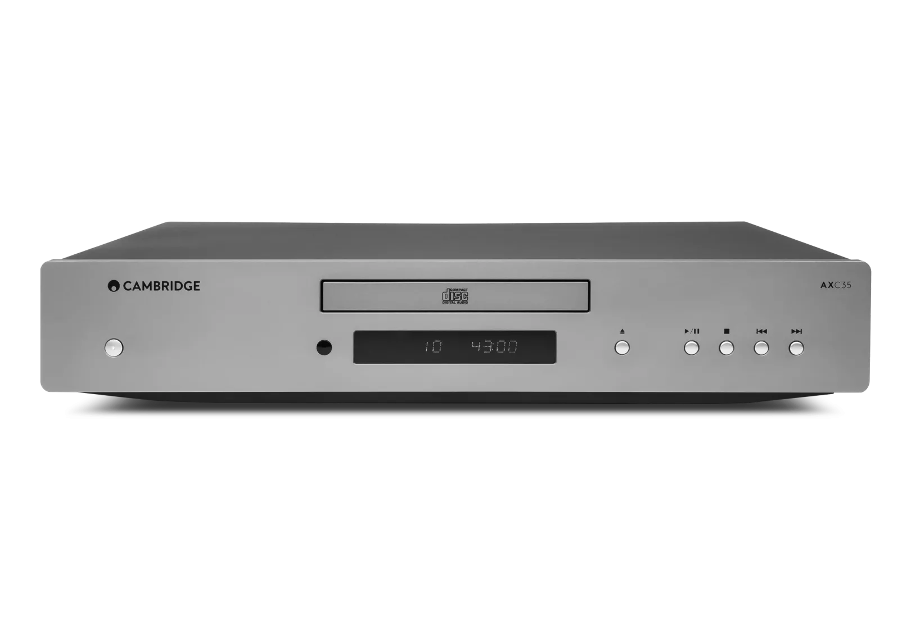
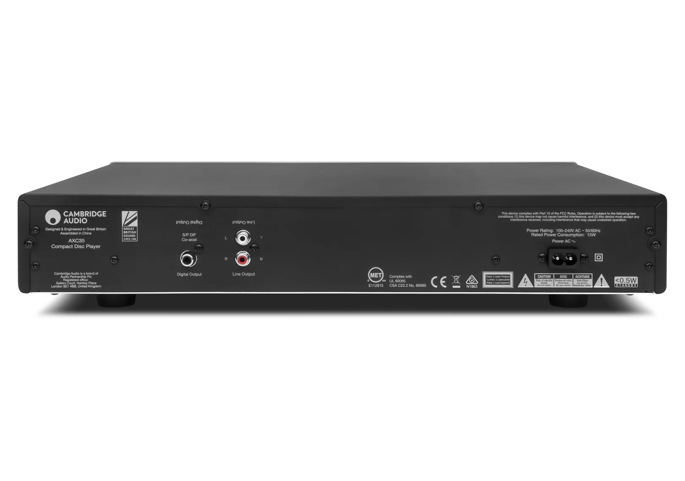
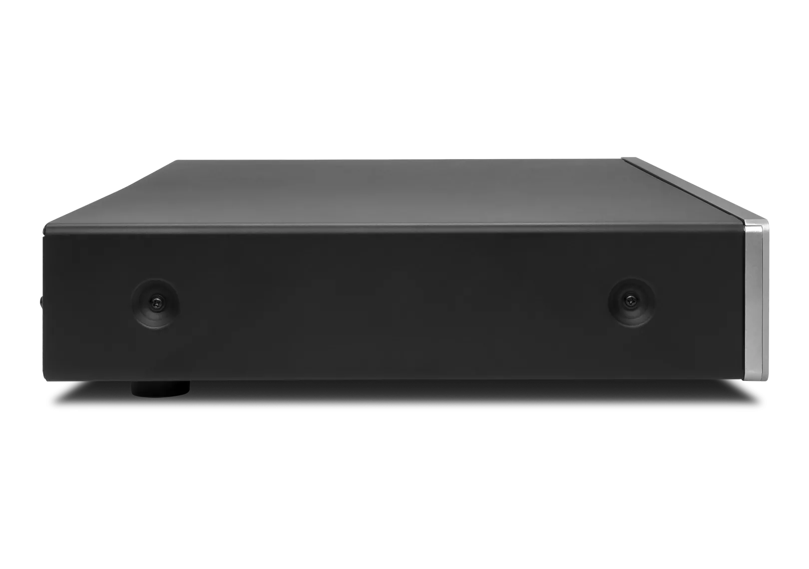
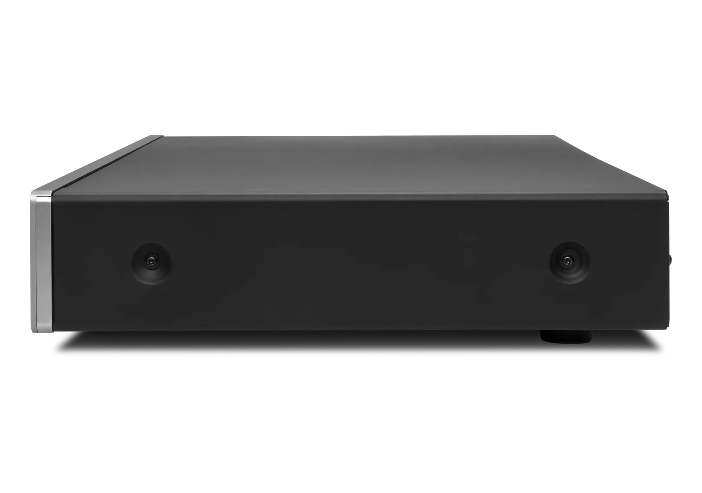
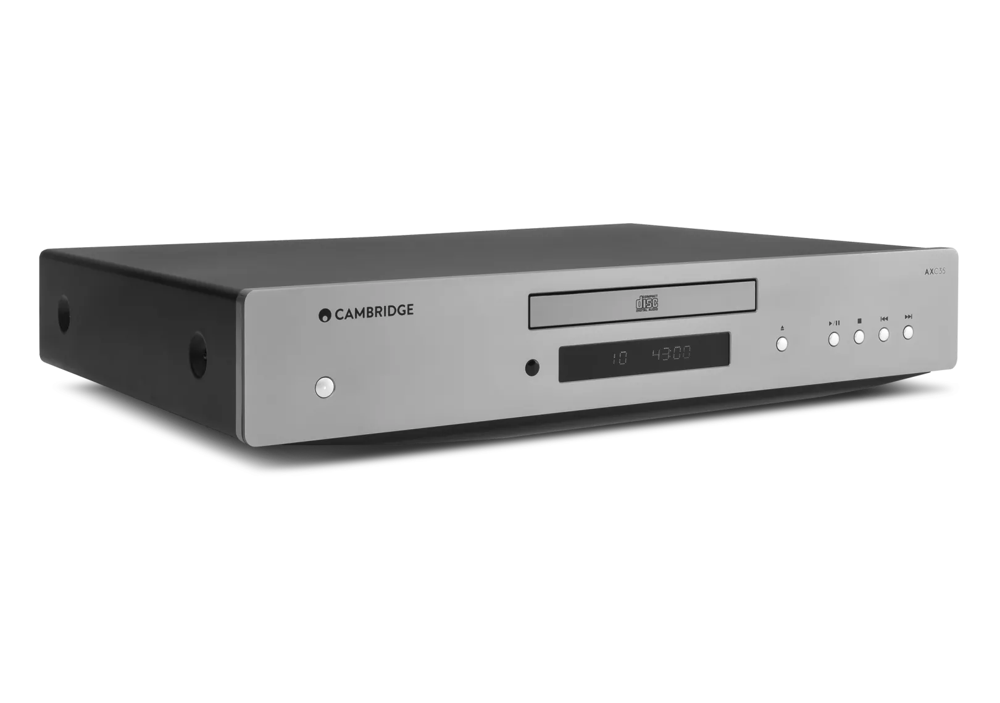
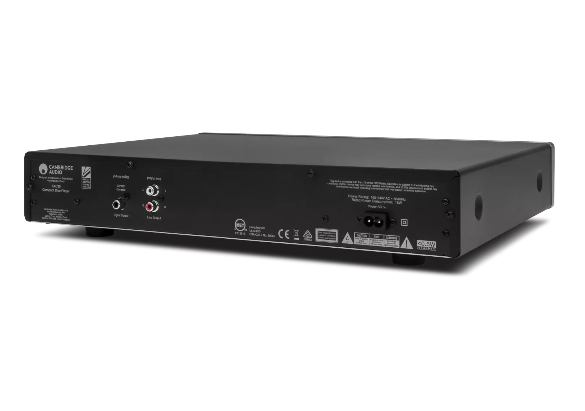
CDプレーヤー
AXC35
AXC35は、高性能Wolfson DAC搭載のエレガントなCDプレーヤーです。ギャップレス再生とデジタル同軸出力を備え、CDコレクションから優れた音質と柔軟な接続性を引き出します。
グレー 販売店を探す
Wolfson Microelectronics WM8524 DAC
2次バターワースフィルター
デジタルディスプレイ
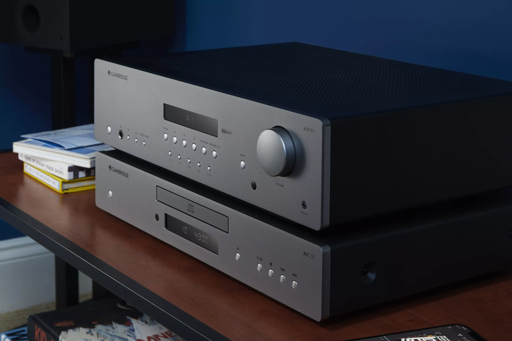
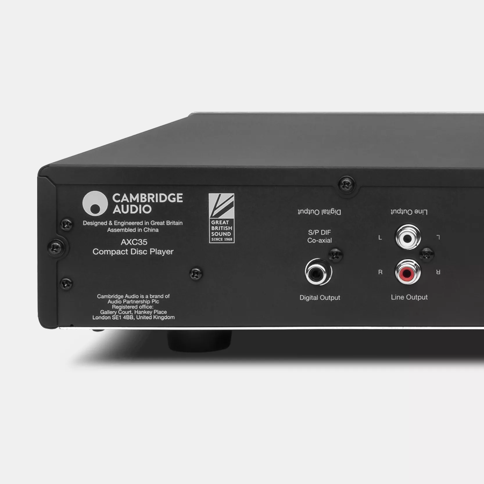
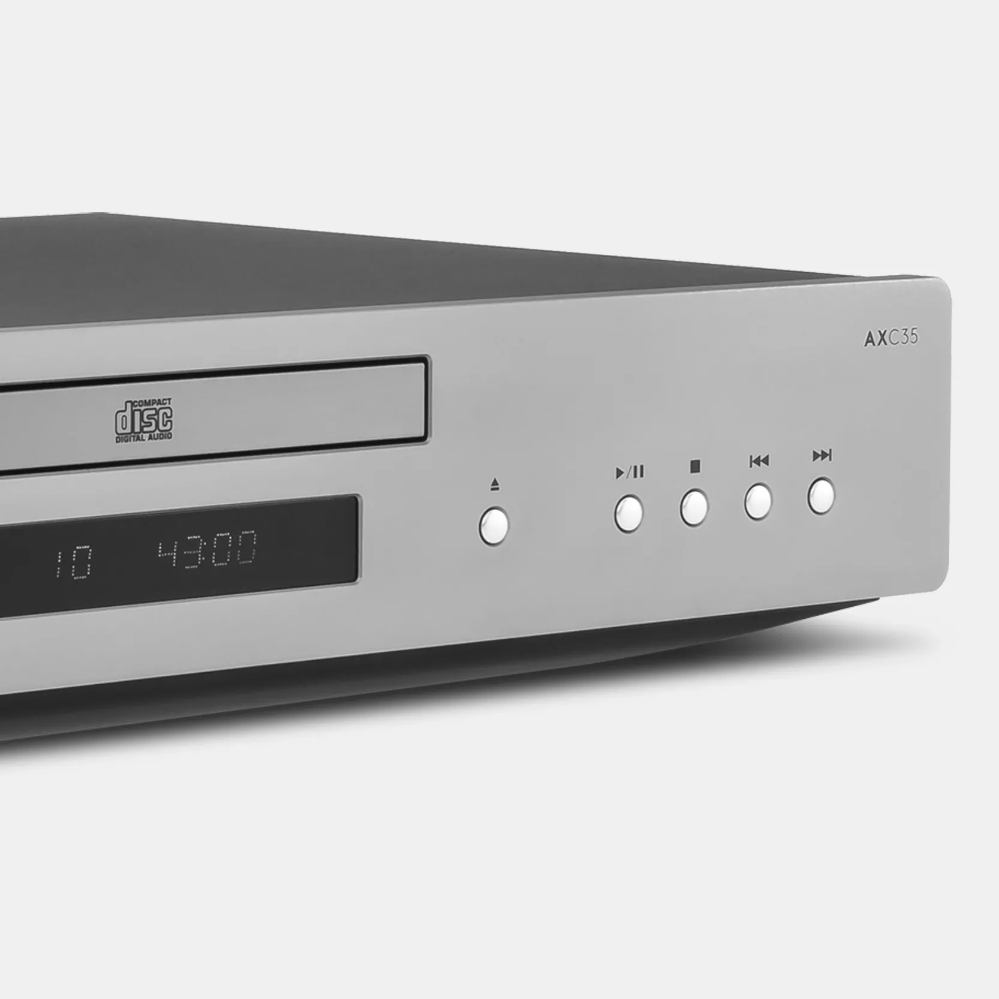
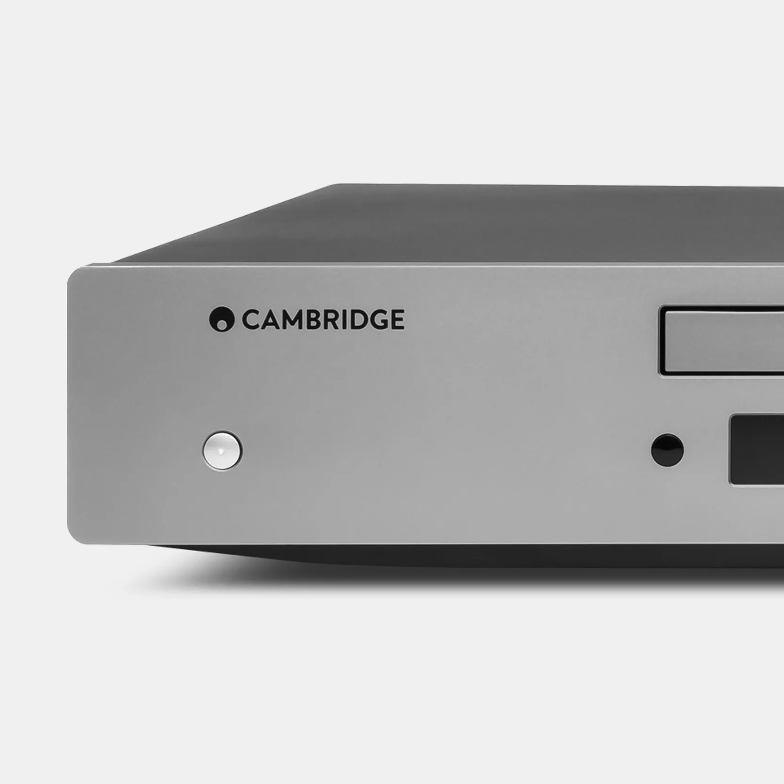
広がる接続性
AXC35のデジタル同軸出力により、対応アンプや外部DACへ直接接続が可能。音楽をより自由に楽しむための選択肢が広がります。
シームレスな統合性
ギャップレス再生と幅広い互換性を備えたAXC35は、あらゆるアンプやオーディオシステムとスムーズに連携し、途切れのないサウンドを実現します。
タイムレスなデザイン
AXシリーズ共通のルナグレーのミニマルなフェイシア、ブラックスチールキャビネット、フローティングベースを採用。既存のセットアップに自然に溶け込みます。
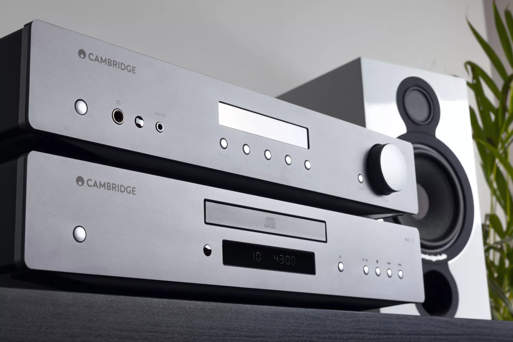
CD SOUND COMES FIRST
AXC35は、音楽を愛するすべての人のために作られました。高度な接続性と精緻なサウンド再現により、最新のHi-Fiシステムへの統合や、愛用システムのアップグレードに最適な一台です。
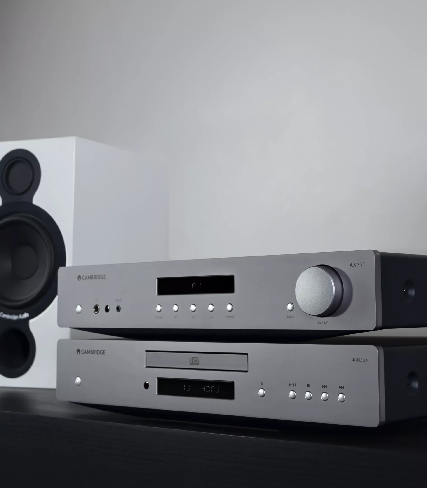
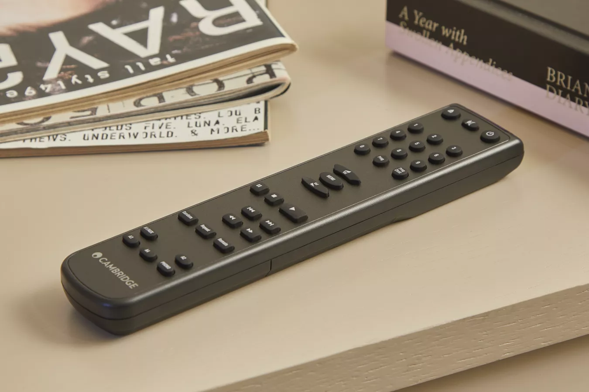
手軽な再生、色褪せないサウンド
高品質Wolfson DAC
精緻でディテール豊かなサウンド再現を実現します。
デジタル同軸出力
対応アンプや外部DACへのダイレクトなデジタル接続を提供します。
幅広い互換性
あらゆるアンプや既存のオーディオシステムと組み合わせて使用できます。
ギャップレス再生
途切れのないリスニングを実現。ライブアルバムやクラシック音楽に最適です。
スリム＆スタイリッシュデザイン
精密加工のコンポーネントと上品なLEDインジケーターを搭載。
"Slimline, no-frills CD player, a capable contender"
技術仕様
THD @ 1kHz -10dBFS<0.01%
DACWolfson Microelectronics WM8524
ギャップレス再生対応
フィルター2次バターワースフィルター
周波数特性（±0.4dB）20Hz - 20kHz
THD @ 1kHz 0dBFS<0.006%
S/N比（A加重）>95dB
クロストーク @ 1kHz<-98dB
クロストーク @ 20kHz<-95dB
出力インピーダンス<50Ω
最大消費電力15W
スタンバイ消費電力<0.5W
寸法75 x 430 x 305mm (3.0 x 16.9 x 12.2")
重量4.3kg (9.5lbs)
S/PDIF出力インピーダンス<75Ω
同梱物AXC35 CDプレーヤー、電源ケーブル、リモコン、単4電池×2、セーフティガイド